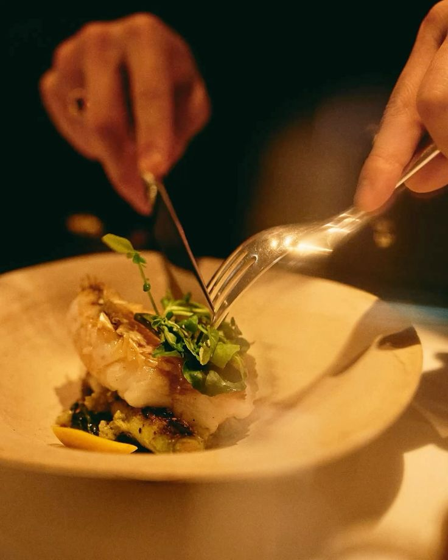
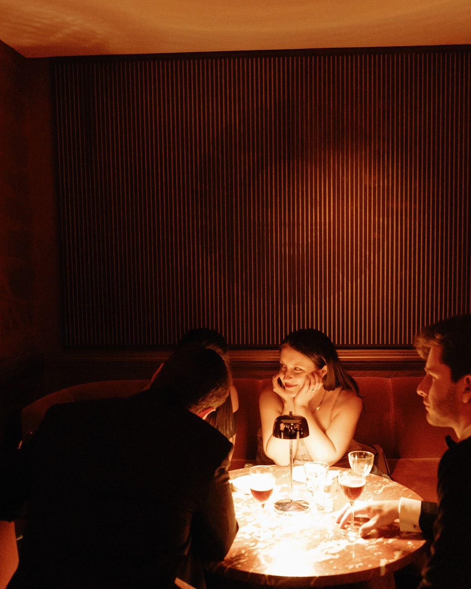
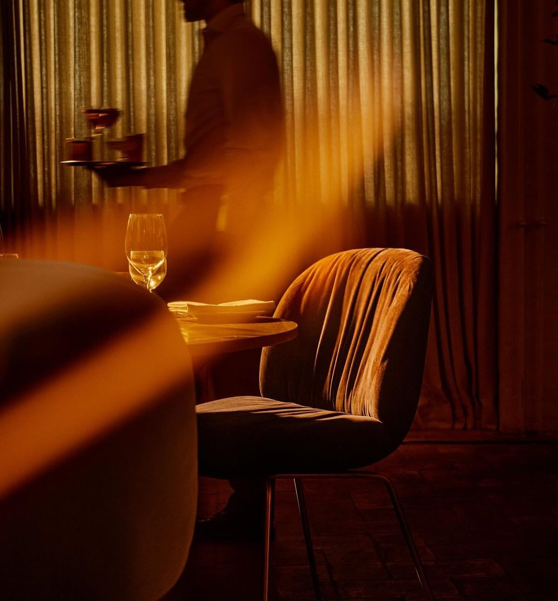

EL UMBRAL
Una nueva mirada sobre lo nuestro.
El Umbral nace de la idea de llevar la gastronomía argentina a un nuevo lugar: reinterpretar aquello que conocemos y descubrirlo desde una mirada contemporánea.
Trabajamos con productos locales y de estación, seleccionados por su calidad y origen, para crear una cocina de autor que respeta el producto y, al mismo tiempo, busca sorprender.

NUESTRA COCINA
Nuestra propuesta se inspira en los sabores y productos de Argentina.
Carnes, pescados de río, vegetales de estación y productos regionales se transforman mediante técnicas contemporáneas para crear platos que combinan identidad, creatividad y sofisticación.
Cada temporada propone nuevos ingredientes y nuevas posibilidades.
MÁS QUE UNA CENA
En El Umbral creemos que una experiencia gastronómica comienza mucho antes del primer bocado.
La iluminación, los materiales, la música, la vajilla, el servicio, los vinos y los cócteles forman parte de una misma experiencia.
Un espacio íntimo y cálido pensado para disfrutar, descubrir y quedarse un poco más.

NUESTRO CONCEPTO
Cruzar el umbral hacia una nueva forma de vivir lo argentino.
Una invitación a dejar atrás lo cotidiano y entrar en un espacio donde la gastronomía argentina se encuentra con una mirada sofisticada y contemporánea.
